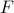
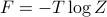

Solving the 1D Ising Model for real!!
Goodness. Today marks the third time that we've gone over the 1D Ising model, and it's still confusing as hell! To make matters worse, Prof. Kivelson still hasn't given us any definitive resources to learn from.
Thankfully, today's class made things a bit more clear for me. I guess third time's a charm.
Anyways, here we go.
Outline
Big Picture
Relation to spin-half quantum system
The homework
Big picture
What are we trying to do?
Our end goal is to find various thermodynamic properties of the 1D Ising model. Remember that thermodynamics means that
the system is in thermal equilibrum; where the probability of each configuration/microstate is
 . (This also called the ‘‘canonical ensemble’’)
. (This also called the ‘‘canonical ensemble’’)we take the
 limit – the system is big,
limit – the system is big,
and we're trying to find various properties of these thermodynamic systems.
What sorts of properties?
we're interested in expectation values such as
 which tell you the average value of the
which tell you the average value of the  'th spin when the system reaches thermodynamic equilibrium.
'th spin when the system reaches thermodynamic equilibrium.For instance, you can imagine that if there's a very strong magnetic field that wants to align the spins to face downwards, then
will be close to -1. Or that if you heat everything up to very hot, then all the spins are scrambled to be randomly up or down, so will be close to 0.For the 1D Ising model,
is the same for all values of ! Since the Hamiltonian is translationally invariant (see explanation of symmetry), all the sites are identical, and the average spin will be the same no matter which site you look at.(Maybe for more complicated or realistic models, the sites would be distinct – as in a heterogenous material – and then perhaps
 in general)
in general)
we're also interested in correlation functions such as
 , which tell you how much spin
, which tell you how much spin  and spin
tend to point in the same direction or in opposite directions at equilibrium.
and spin
tend to point in the same direction or in opposite directions at equilibrium.For instance, you can imagine that nearby spins are more correlated than faraway spins, because they can interact with eachother more strongly. Or you can imagine that as , any pairs of spins will become less correlated, since the thermal excitations make all the spins jiggle around more.
Again, because of translational invariance (see here for explanation), we expect
to only depend on the distance between the spins ! For instance, the correlation between spins 2 and 5 is the same as between 100 and 103, since they're the same distance apart.
How do we calculate properties?
Prof. Kivelson outlined the procedure for us on Monday.
Our system is defined by a Hamiltonian
 , a function that tells us its energy.
, a function that tells us its energy.From the Hamiltonian, we figure out the energy eigenstates, a.k.a. configurations, a.k.a. microstates (or sometimes even ‘‘states’’) of the system. These are the basic states, and we will be summing over these states pretty soon.
Yes, these concepts are the same thing! They're just called different words because we learn them in different contexts…
Our main goal is to calculate the partition function
 .
.

Here the sum runs over all the states of the system ,  means ‘‘the energy of the system when it's in state s’’, and is the inverse temperature of our system.
means ‘‘the energy of the system when it's in state s’’, and is the inverse temperature of our system.
We spend most of our effort trying to figure out how to compute the partition function, which begs the question…
Why is the partition function useful?
Once we've found the partition function , we can calculate pretty much everything else! For instance:
the free energy  is given by 
the average spin
is given by
To explain the notation: I'm summing over all states (this time I call the states  rather than ). Inside the sum I have the spin of the 'th site (which is
rather than ). Inside the sum I have the spin of the 'th site (which is  ) as well as the Boltzmann weight . The number is the energy of the system when it's in the state , and we find this by plugging in the 's into the Hamiltonian.
) as well as the Boltzmann weight . The number is the energy of the system when it's in the state , and we find this by plugging in the 's into the Hamiltonian.
the spin-spin correlation
is given by

Hopefully, this serves as a sort of useful roadmap for where we're going.
Solving the 1D Ising Model
Draw a picture to gain some physical intuition (we didn't do this in class!!)
Rewrite the Hamiltonian as a sum over bonds (rather than sites AND bonds)
Zoom in on a particular bond.
Write down a transfer matrix which represents the bond from site
to site 
Key step – Notice that summing over
 looks an awful lot like contracting over a shared index, a.k.a. matrix multiplication.
looks an awful lot like contracting over a shared index, a.k.a. matrix multiplication.Rewrite
as the trace of a bunch of transfer matrices multiplied together.Similarly, rewrite the average spin
and the correlation function in terms of transfer matrices.
Afterwards, we will diagonalize the transfer matrix, and we will use its eigenbasis to calculate a few interesting quantities. Throughout these steps, we'll appeal to Pauli matrices to help us calculate things, and we'll slowly build up an analogy with a quantum mechanical spin-half particle.
Find the eigenvalues and eigenvectors of the transfer matrix

Use the eigenbasis of
to explicitly compute the partition function (dificulty: easy)Again, use that basis to calculate the average spin
(difficulty: medium)Finally, use that basis to calculate the correlation function
(difficulty: Kivelson)Profit!?
Under construction…check back soon!

Relation to spin-half
Under construction…check back soon!
Our first problem set
To be honest, we pretty much did the problem set during class today.
On the problem set, Prof. Kivelson first asks us to calculate the magnetization density  , which we did in class (!). Later he asks us to express the transfer matrix in terms of Pauli matrices (which we also did in class (!?)) and to discuss the correspondence between the 1D Ising Model and a spin-half quantum system (again, we also did this in class!!!).
, which we did in class (!). Later he asks us to express the transfer matrix in terms of Pauli matrices (which we also did in class (!?)) and to discuss the correspondence between the 1D Ising Model and a spin-half quantum system (again, we also did this in class!!!).
It looks like the main purpose of the problem set is
to review everything from class today,
to gain a better intuition by interpreting the various limits of the magnetization density
, andto apply our techniques from class to solve other systems like the antiferromagnet (with both first and second neighbor interactions) or the X-Y ferromagnet (where each spin takes on an angle rather than a discrete
).
Anyways, I'm not sure how much I can discuss here without violating the honor code. But I did have an interesting remark on the definition of magnetization density.
tl;dr:  is a subtle statement.
is a subtle statement.
On the problem set, the magnetization density is defined as
which seems sort of bizarre since we add up  terms and then divide by again. What's going on here?
terms and then divide by again. What's going on here?
The answer has to do with intensive vs extensive quantities, and experimental observables vs mathematical expressions.
To start off, notice that the average of any particular microscopic spin  is impossible to measure! (Spin would have a puny magnetic field, and besides, there's a whole bunch of other spins nearby that would mess up the measurement.) Our actual experimental observable is not the magnetization of one particular spin, but rather the magnetization of the whole magnet, which is given by
is impossible to measure! (Spin would have a puny magnetic field, and besides, there's a whole bunch of other spins nearby that would mess up the measurement.) Our actual experimental observable is not the magnetization of one particular spin, but rather the magnetization of the whole magnet, which is given by

That is, when we perform an experiment, we measure the total magnetization of the magnet, which we get by adding up the contributions from each of the spins. (Notice this is capital  , not lowercase !)
, not lowercase !)
The problem with total magnetization is that it's an extensive rather than intensive property – that is, it scales with the system size . If we doubled the size of the magnet, we would also double the total magnetiation . Now, we don't want to use an extensive property that grows with , since it'll blow up when we take the thermodynamic limit . Rather, we want an intensive property independent of system size.
To solve this conundrum, just divide the total magnetization by . We define the magnetization density as
and voila, no longer blows up as . So we've achieved our goal of finding an experimental quantity that's intensive.
Finally, just to make this whole affair even more ridiculous, it turns out that is actually the same value for all ! (Remember, the Ising model Hamiltonian is translationally invariant.) So when we find , we're just adding up the same number times, and then dividing by …and at the end of the day, the magnetization density is just the same as the average spin .
Anyways, that was a long-winded way to arrive at the equation , but there's a few subtleties involved in interpreting both sides of the equation.